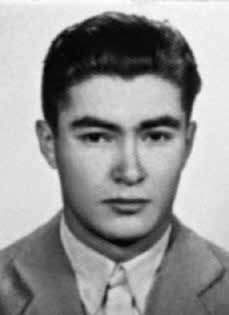

Antonio
Luciano
Pregoni
CIRCUNSTÂNCIAS DA MORTE
Documentos do Centro de Informações do Exterior (Ciex), do Ministério das Relações Exteriores (MRE), abertos à consulta pública pelo Arquivo Nacional no ano de 2012, lançaram luz sobre os desaparecimentos do francês Jean Henri Raya Ribard e do argentino Antonio Luciano Pregoni, ocorridos no Brasil no final de novembro de 1973, assim como sobre sua conexão com os sequestros dos brasileiros Joaquim Pires Cerveira e João Batista Rita, ocorridos em Buenos Aires no dia 5 de dezembro do mesmo ano.
Há informações circunstanciais, que não puderam ser confirmadas pela Comissão Nacional da Verdade (CNV), de que os desaparecimentos de Joaquim Pires Cerveira, João Batista Rita, Juan Raya e Antonio Pregoni estariam relacionados também ao desaparecimento, em 21 de novembro de 1973, em Copacabana, no Rio de Janeiro, de Caiupy Alves de Castro, que teria mantido contatos com Cerveira no ano de 1971 no Chile. Em informe interno do Ciex, datado de 14 de março de 1974, Alberto Conrado Avegno, agente do Ciex que usava, entre outros, o codinome de “Altair”, sugeriu que a argentina Alicia Eguren, militante da esquerda peronista, era o contato entre o ex-major brasileiro Joaquim Cerveira e o pequeno grupo de militantes revolucionários integrado pelo francês Jean Henri Raya – radicado na Argentina e conhecido como Juan Raya – e pelo argentino Antonio Pregoni.
Na década de 1960, Pregoni havia integrado o grupo Tupamaros, do Uruguai. Joaquim Pires Cerveira, ex-major do Exército brasileiro e líder de um pequeno grupo conhecido como Frente de Libertação Nacional (FLN), encontrava-se na Argentina após ter deixado o Chile às vésperas do golpe contra Salvador Allende. Segundo documentos dos serviços de informações argentinos e brasileiros, Cerveira portava à época passaporte brasileiro emitido em nome de “Walter de Moura”. O documento do Ciex de 1974 informa que Juan Raya viajara ao Brasil em novembro de 1973 para realizar uma ação armada em conjunto com o grupo do major Cerveira, que então contava com a participação de brasileiros integrantes da FLN e do Movimento Revolucionário Tiradentes (MRT).
O alvo da suposta operação não foi identificado no documento. Segundo o informe mencionado, Alberto Conrado, agente infiltrado na esquerda peronista, deveria ir ao Rio de Janeiro para investigar melhor o que havia acontecido com Raya – identificado erroneamente no relatório pelo nome de “Juan Rays”. Denúncia nº 3.366, registrada nos arquivos da Conadep, da Argentina, informa que Jean Henri Raya Ribard teria viajado de Buenos Aires ao Rio de Janeiro em 16 de novembro de 1973, na companhia de Antonio Luciano Pregoni e de uma terceira pessoa, chamada Antonio Graciani. Todos estão desaparecidos. De acordo com o habeas corpus em favor de Jean Henri Raya apresentado por sua esposa Mabel Bernis e sua mãe Gilberte Camille Ribard de Raya às autoridades judiciais brasileiras em setembro de 1974, Raya, Pregoni e Graciani ingressaram no Brasil em ônibus da empresa Pluma pela cidade de Uruguaiana, vindo de Paso de los Libres, Argentina.
Os encontros em Buenos Aires, entre o grupo liderado pelo major Joaquim Pires Cerveira e o grupo de Juan Raya e Antonio Luciano Pregoni foram confirmados em depoimento do argentino Julio Cesar Robles à CNV, realizado em 8 de abril de 2014 na cidade argentina de Río Ceballos, na província de Córdoba. Segundo Julio Robles, o primeiro desses encontros teria ocorrido na confeitaria Richmond, na rua Florida, em Buenos Aires, poucas semanas após o golpe contra Salvador Allende no Chile. De acordo com Robles, Alicia Eguren teria promovido a aproximação entre os dois grupos de militantes, a fim de que os argentinos providenciassem assistência econômica aos brasileiros provenientes do Chile.
Julio Robles, que participou de várias iniciativas de insurgência da resistência peronista na década de 1950 e 1960, informou à CNV que Cerveira esteve nesses encontros na companhia de outros dois brasileiros cujos nomes desconhece, mas que eles não aparentavam ter mais de trinta anos de idade à época. Robles confirmou à CNV que Juan Raya, Antonio Pregoni e outro argentino conhecido pelo apelido de “El Salteño” – que acredita ser Antonio Graciani – teriam viajado ao Brasil em meados de novembro de 1973, possivelmente na companhia de um dos brasileiros que integravam o grupo de Cerveira. Também estaria junto a outro cidadão de nacionalidade chilena. Memorando do Serviço de Inteligência da Prefectura Naval Argentina (órgão equivalente à Capitania dos Portos no Brasil), com data de 28 de novembro de 1973, disponibilizado à CNV pela Comisión Provincial de la Memoria da Província de Buenos Aires, revela – em complementação ao depoimento de Robles – que as forças armadas e policiais da Argentina foram informadas pela Polícia Federal de Uruguaiana (RS), que Joaquim Pires Cerveira estava na Argentina à época e estaria realizando “contatos com organizações extremistas argentinas”.
Em informe do Ciex, de 14 de dezembro de 1973, o agente Alberto Conrado (codinome “Altair”) relatou que estivera “várias vezes” com Cerveira no Chile. Conrado refere-se à denúncia do sequestro de Joaquim Pires Cerveira e João Batista Rita em Buenos Aires e à batida realizada na casa de Cerveira por um grupo de policiais argentinos que tinha à frente um brasileiro, “dizendo-se da Interpol”. O agente do Ciex também indica que o “coronel Floriano” – coronel Floriano Aguilar Chagas, adido do Exército junto à Embaixada do Brasil em Buenos Aires à época – estaria vinculado tanto à operação de sequestro de Joaquim Pires Cerveira em Buenos Aires como à “penetração” no Brasil de um “comando argentino” de “peronistas de esquerda”.
No memorando nº 4, de 29 de outubro de 1974, Arancibia Clavel, agente da Dirección de Inteligencia Nacional (Dina) chilena, menciona “contatos estabelecidos: coronel Floriano Aguilar, Agregado Militar del Brasil, me ofreció información sobre la subversión argentina…”. Documentação recebida pela CNV do Ministério Público da Argentina confirma outros contatos do coronel Floriano Aguilar Chagas com agentes da inteligência argentina e chilena em Buenos Aires nos anos de 1974 e 1975.
Documents from the Foreign Information Center (Ciex), of the Ministry of Foreign Affairs (MRE), opened for public consultation by the National Archives in 2012, shed light on the disappearances of Frenchman Jean Henri Raya Ribard and Argentinean Antonio Luciano Pregoni, which occurred in Brazil at the end of November 1973, as well as on their connection with the kidnappings of Brazilians Joaquim Pires Cerveira and João Batista Rita, which occurred in Buenos Aires on the 5th of December of the same year.
There is circumstantial information, which could not be confirmed by the National Truth Commission (CNV), that the disappearances of Joaquim Pires Cerveira, João Batista Rita, Juan Raya and Antonio Pregoni were also related to the disappearance, on November 21, 1973, in Copacabana, Rio de Janeiro, of Caiupy Alves de Castro, who had maintained contacts with Cerveira in 1971 in Chile. In an internal Ciex report, dated March 14, 1974, Alberto Conrado Avegno, a Ciex agent who used, among others, the code name “Altair”, suggested that the Argentine Alicia Eguren, a militant of the Peronist left, was the contact between the former Brazilian major Joaquim Cerveira and the small group of revolutionary militants made up of the Frenchman Jean Henri Raya – based in Argentina and known as Juan Raya – and the Argentine Antonio Pregoni.
In the 1960s, Pregoni had joined the Tupamaros group, from Uruguay. Joaquim Pires Cerveira, former major in the Brazilian Army and leader of a small group known as the National Liberation Front (FLN), was in Argentina after leaving Chile on the eve of the coup against Salvador Allende. According to documents from Argentine and Brazilian intelligence services, Cerveira at the time carried a Brazilian passport issued in the name of “Walter de Moura”. The 1974 Ciex document states that Juan Raya had traveled to Brazil in November 1973 to carry out an armed action together with Major Cerveira's group, which then included the participation of Brazilian members of the FLN and the Tiradentes Revolutionary Movement (MRT).
The target of the alleged operation was not identified in the document. According to the aforementioned report, Alberto Conrado, an undercover agent in the Peronist left, was supposed to go to Rio de Janeiro to better investigate what had happened to Raya – wrongly identified in the report by the name “Juan Rays”. Complaint No. 3,366, registered in the Conadep archives, in Argentina, informs that Jean Henri Raya Ribard traveled from Buenos Aires to Rio de Janeiro on November 16, 1973, in the company of Antonio Luciano Pregoni and a third person, called Antonio Graciani. Everyone is missing. According to the habeas corpus in favor of Jean Henri Raya presented by his wife Mabel Bernis and his mother Gilberte Camille Ribard de Raya to the Brazilian judicial authorities in September 1974, Raya, Pregoni and Graciani entered Brazil on a Pluma bus through the city of Uruguaiana, coming from Paso de los Libres, Argentina.
The meetings in Buenos Aires, between the group led by Major Joaquim Pires Cerveira and the group of Juan Raya and Antonio Luciano Pregoni were confirmed in a statement by Argentine Julio Cesar Robles to the CNV, held on April 8, 2014 in the Argentine city of Río Ceballos, in the province of Córdoba. According to Julio Robles, the first of these meetings took place at the Richmond confectionery shop, on Florida Street, in Buenos Aires, a few weeks after the coup against Salvador Allende in Chile. According to Robles, Alicia Eguren would have promoted rapprochement between the two groups of militants, so that the Argentines would provide economic assistance to Brazilians coming from Chile.
Julio Robles, who participated in several insurgency initiatives of the Peronist resistance in the 1950s and 1960s, informed the CNV that Cerveira was at these meetings in the company of two other Brazilians whose names he does not know, but who did not appear to be over thirty years of age at the time. Robles confirmed to the CNV that Juan Raya, Antonio Pregoni and another Argentine known by the nickname “El Salteño” – who he believes to be Antonio Graciani – had traveled to Brazil in mid-November 1973, possibly in the company of one of the Brazilians who were part of Cerveira's group. He would also be with another citizen of Chilean nationality. Memorandum from the Intelligence Service of the Argentine Naval Prefecture (body equivalent to the Port Authority in Brazil), dated November 28, 1973, made available to the CNV by the Comisión Provincial de la Memoria of the Province of Buenos Aires, reveals – in addition to Robles' testimony – that the Argentine armed forces and police were informed by the Federal Police of Uruguaiana (RS), that Joaquim Pires Cerveira was in Argentina at the time and would be carrying out “contacts with Argentine extremist organizations”.
In a Ciex report dated December 14, 1973, agent Alberto Conrado (codename “Altair”) reported that he had been “several times” with Cerveira in Chile. Conrado refers to the report of the kidnapping of Joaquim Pires Cerveira and João Batista Rita in Buenos Aires and the raid carried out on Cerveira's house by a group of Argentine police officers led by a Brazilian, “claiming to be from Interpol”. The Ciex agent also indicates that “Colonel Floriano” – Colonel Floriano Aguilar Chagas, Army attaché at the Brazilian Embassy in Buenos Aires at the time – would be linked both to the kidnapping operation of Joaquim Pires Cerveira in Buenos Aires and to the “penetration” in Brazil of an “Argentine command” of “left-wing Peronists”.
In memorandum no. 4, dated October 29, 1974, Arancibia Clavel, agent of the Chilean National Intelligence Directorate (Dina), mentions “established contacts: Colonel Floriano Aguilar, Agregado Militar del Brasil, offered me information about Argentine subversion…”. Documentation received by the CNV from the Argentine Public Ministry confirms other contacts between Colonel Floriano Aguilar Chagas and Argentine and Chilean intelligence agents in Buenos Aires in 1974 and 1975.
Documentos del Centro de Información Exterior (Ciex), del Ministerio de Relaciones Exteriores (MRE), abiertos a consulta pública por el Archivo Nacional en 2012, arrojan luz sobre las desapariciones del francés Jean Henri Raya Ribard y del argentino Antonio Luciano Pregoni, ocurridas en Brasil a fines de noviembre de 1973, así como sobre su conexión con los secuestros de los brasileños Joaquim Pires Cerveira y João Batista Rita, ocurridos en Buenos Aires. el 5 de diciembre del mismo año.
Hay información circunstancial, que no pudo ser confirmada por la Comisión Nacional de la Verdad (CNV), de que las desapariciones de Joaquim Pires Cerveira, João Batista Rita, Juan Raya y Antonio Pregoni también estuvieron relacionadas con la desaparición, el 21 de noviembre de 1973, en Copacabana, Río de Janeiro, de Caiupy Alves de Castro, quien había mantenido contactos con Cerveira en 1971 en Chile. En un informe interno de Ciex, fechado el 14 de marzo de 1974, Alberto Conrado Avegno, un agente de Ciex que utilizaba, entre otros, el nombre clave “Altair”, sugirió que la argentina Alicia Eguren, militante de la izquierda peronista, era el contacto entre el ex mayor brasileño Joaquim Cerveira y el pequeño grupo de militantes revolucionarios integrado por el francés Jean Henri Raya – radicado en Argentina y conocido como Juan Raya – y el argentino Antonio Pregoni.
En los años 1960, Pregoni se había integrado al grupo Tupamaros, de Uruguay. Joaquim Pires Cerveira, ex mayor del ejército brasileño y líder de un pequeño grupo conocido como Frente de Liberación Nacional (FLN), se encontraba en Argentina tras abandonar Chile en vísperas del golpe contra Salvador Allende. Según documentos de los servicios de inteligencia argentinos y brasileños, Cerveira portaba entonces un pasaporte brasileño expedido a nombre de “Walter de Moura”. El documento del Ciex de 1974 afirma que Juan Raya había viajado a Brasil en noviembre de 1973 para realizar una acción armada junto al grupo del mayor Cerveira, que contaba entonces con la participación de miembros brasileños del FLN y del Movimiento Revolucionario Tiradentes (MRT).
El objetivo del presunto operativo no fue identificado en el documento. Según el informe antes mencionado, Alberto Conrado, un agente encubierto de la izquierda peronista, debía viajar a Río de Janeiro para investigar mejor lo que le había sucedido a Raya, erróneamente identificado en el informe con el nombre de “Juan Rays”. La denuncia N° 3.366, registrada en el archivo de la Conadep, en Argentina, informa que Jean Henri Raya Ribard viajó desde Buenos Aires a Río de Janeiro el 16 de noviembre de 1973, en compañía de Antonio Luciano Pregoni y una tercera persona, llamada Antonio Graciani. Todos están desaparecidos. Según el habeas corpus a favor de Jean Henri Raya presentado por su esposa Mabel Bernis y su madre Gilberte Camille Ribard de Raya ante las autoridades judiciales brasileñas en septiembre de 1974, Raya, Pregoni y Graciani ingresaron a Brasil en un autobús Pluma por la ciudad de Uruguaiana, provenientes de Paso de los Libres, Argentina.
Las reuniones en Buenos Aires, entre el grupo liderado por el mayor Joaquim Pires Cerveira y el grupo de Juan Raya y Antonio Luciano Pregoni fueron confirmadas en una declaración del argentino Julio César Robles a la CNV, realizada el 8 de abril de 2014 en la ciudad argentina de Río Ceballos, en la provincia de Córdoba. Según Julio Robles, la primera de estas reuniones tuvo lugar en la confitería Richmond, de la calle Florida, en Buenos Aires, pocas semanas después del golpe de Estado contra Salvador Allende en Chile. Según Robles, Alicia Eguren habría promovido un acercamiento entre ambos grupos de militantes, para que los argentinos brindaran ayuda económica a los brasileños provenientes de Chile.
Julio Robles, que participó en varias iniciativas insurgentes de la resistencia peronista en las décadas de 1950 y 1960, informó a la CNV que Cerveira estaba en esas reuniones en compañía de otros dos brasileños cuyos nombres desconoce, pero que no parecían tener más de treinta años en ese momento. Robles confirmó a la CNV que Juan Raya, Antonio Pregoni y otro argentino conocido con el sobrenombre de “El Salteño” -que cree ser Antonio Graciani- habían viajado a Brasil a mediados de noviembre de 1973, posiblemente en compañía de uno de los brasileños que formaban parte del grupo de Cerveira. También estaría con otro ciudadano de nacionalidad chilena. Memorándum del Servicio de Inteligencia de la Prefectura Naval Argentina (órgano equivalente a la Autoridad Portuaria en Brasil), de fecha 28 de noviembre de 1973, puesto a disposición de la CNV por la Comisión Provincial de la Memoria de la Provincia de Buenos Aires, revela -además del testimonio de Robles- que las fuerzas armadas y policiales argentinas fueron informadas por la Policía Federal de Uruguaiana (RS), que Joaquim Pires Cerveira se encontraba en ese momento en Argentina y estaría realizando “contactos con autoridades argentinas”. organizaciones extremistas”.
En un informe de Ciex del 14 de diciembre de 1973, el agente Alberto Conrado (nombre clave “Altair”) informó que había estado “varias veces” con Cerveira en Chile. Conrado se refiere a la denuncia del secuestro de Joaquim Pires Cerveira y João Batista Rita en Buenos Aires y del allanamiento realizado en la casa de Cerveira por un grupo de policías argentinos encabezados por un brasileño, “que decían ser de Interpol”. El agente de Ciex también indica que el “coronel Floriano” –coronel Floriano Aguilar Chagas, entonces agregado del Ejército en la embajada de Brasil en Buenos Aires– estaría vinculado tanto con la operación de secuestro de Joaquim Pires Cerveira en Buenos Aires como con la “penetración” en Brasil de un “comando argentino” de “peronistas de izquierda”.
En el memorando no. 4, del 29 de octubre de 1974, Arancibia Clavel, agente de la Dirección de Inteligencia Nacional (Dina) de Chile, menciona “contactos establecidos: el coronel Floriano Aguilar, Agregado Militar del Brasil, me ofreció información sobre la subversión argentina…”. La documentación recibida por la CNV del Ministerio Público argentino confirma otros contactos entre el coronel Floriano Aguilar Chagas y agentes de inteligencia argentinos y chilenos en Buenos Aires en 1974 y 1975.